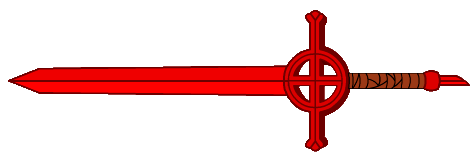
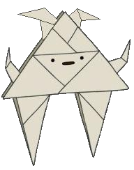
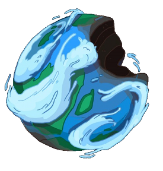
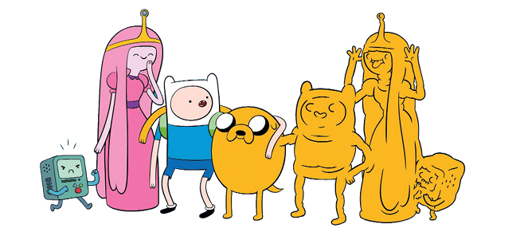
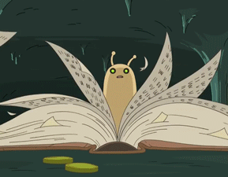
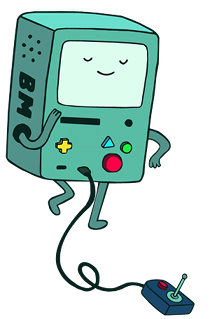
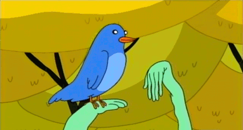
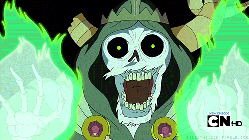

Hadron
JavaScript & Gaming Crash Course
Awesomenoid!
Press ctrl+u to see the sources!
Hands on!
Open Chrome!
- Press ctr+shift+j
- In console, use:
- shift+enter to change the line
- Only enter to execute code
Variables
- There are no constants
- Use
varto declare a name - Names (identifiers or ids) are in the form:
[a..zA..Z_$][a..zA..Z_$0..9]*
var X;
var Y;
X=0;
Y=1;
var X=0, Y=1;
What can I assign to variables?
// Simple types
var number = 5;
var text = "Some text";
var moreText = 'More text';
var code = function answerToLife() { return 42; };
var boolean = true;
// Complex types: their values can be any type
var object = { aNumber: number, 'answer to life': code };
var list = [number, text, object];
// Special types
var noDefined = undefined;
var neitherDefined = void 0; // prefered!
var yetNoDefined;
Explore
- Write an expression and press enter
- Use
console.log(expression) - Use
alert(expression)
X;
console.log(X);
alert(X);
Functions
- Use
functionto create a function
function distance(a, b) {
var diff = [
b[X] - a[X],
b[Y] - a[Y]
];
return Math.sqrt(diff[X]*diff[X] + diff[Y]*diff[Y]);
}
function equal(a, b, threshold) {
threshold = threshold || 0.000001; // default parameter
return (b < a) ? // test
(a - b < threshold) : // test is true
(b - a < threshold); // test is false
}
In a webpage
Here you have a HTML5 template:
<!DOCTYPE html>
<html>
<head>
<meta charset="utf-8">
<title>A title for this webpage</title>
</head>
<body>
<canvas style="border: 1px solid black;"></canvas>
<pre id="info"></pre>
<script>
'use strict';
// Your code goes here!
</script>
</body>
</html>
You can embed code inside script tags
<script>
'use strict';
var X=0, Y=1;
function distance(a, b) {
var diff = [
b[X] - a[X],
b[Y] - a[Y]
];
return Math.sqrt(diff[X]*diff[X] + diff[Y]*diff[Y]);
}
function equal(a, b, threshold) {
threshold = threshold || 0.000001; // default parameter
return (b < a) ? // test
(a - b < threshold) : // test is true
(b - a < threshold); // test is false
}
</script>
Always use the JavaScript's good parts!
'use strict' // <-- Put at the beginnig, very important!!
// Your code goes here
Or you can put it into a separate file, then link
<script src="game/Utils.js"></script>
This is preferred
Objects & the Model
The model
Capture the game reality in data structures
- A pad
- A ball
- A scenario
Objects
- Use
{ key: value }syntax
'use strict';
var model = {
scenario: {
width: 500,
height: 400,
blocks: [
[0,1,1,0,0,1,1,0],
[0,1,1,0,0,1,1,0],
[0,0,1,1,1,1,0,0],
[0,0,0,1,1,0,0,0]
]
}
};
Accessing object's properties
- Use dot notation:
object.propertyName - Use index notation:
object['propertyName']
Use second when retrieving computed properties…
…or accessing properties whose names are not
valid identifiers.
Add to game/Model.js:
'use strict';
var PAD_HEIGHT = 20;
var PAD_WIDTH = 70;
var PAD_MARGIN = 5;
var SCENARIO_WIDTH = 500;
var SCENARIO_HEIGHT = 400;
var model = {
pad: {
width: PAD_WIDTH,
height: PAD_HEIGHT,
position: [
SCENARIO_WIDTH / 2,
SCENARIO_HEIGHT - (PAD_HEIGHT / 2) - PAD_MARGIN
]
},
ball: {
radius: 8,
position: [
Math.floor(SCENARIO_WIDTH / 2),
Math.floor(SCENARIO_HEIGHT / 2),
],
velocity: [2.5, 2.5]
},
scenario: {
width: SCENARIO_WIDTH,
height: SCENARIO_HEIGHT,
blocks: [
[0,1,1,0,0,1,1,0],
[0,1,1,0,0,1,1,0],
[0,0,1,1,1,1,0,0],
[0,0,0,1,1,0,0,0]
]
}
};
Constructors
- Use functions to construct objects / instances
- Use
thisto populate the new object - To create an instance use
var o = new Constructor();
function Scenario(blocks, scenarioWidth, scenarioHeight) {
this.scenario = {
width: scenarioWidth || 500,
height: scenarioHeight || 400,
blocks: blocks // blocks before : is a name
// blocks after : refer to the parameter
};
}
var myScenario = new Scenario([
[0,1,1,0],
[1,1,1,1],
[1,1,1,1],
[0,1,1,0]
]);
Replace game/Model.js:
'use strict';
function Model(blocks, scenarioWidth, scenarioHeight) {
// Default block configuration
//
// Blocks will have a implicit width equal to:
// scenario.width / how many blocks in blocks[0]
//
// Blocks will have a implicit height equal to:
// pad.height
blocks = blocks || [
[0,1,1,0,0,1,1,0],
[0,1,1,0,0,1,1,0],
[0,0,1,1,1,1,0,0],
[0,0,0,1,1,0,0,0]
];
scenarioWidth = scenarioWidth || 500;
scenarioHeight = scenarioHeight || 400;
var PAD_HEIGHT = 20;
var PAD_WIDTH = 70;
var PAD_MARGIN = 5;
this.pad = {
width: PAD_WIDTH,
height: PAD_HEIGHT,
position: [
scenarioWidth / 2,
scenarioHeight - (PAD_HEIGHT / 2) - PAD_MARGIN
]
};
this.ball = {
radius: 8,
position: [
Math.floor(scenarioWidth / 2),
Math.floor(scenarioHeight / 2),
],
velocity: [2.5, 2.5]
};
this.scenario = {
width: scenarioWidth,
height: scenarioHeight,
blocks: blocks // blocks before : is a name
// blocks after : refer to the parameter
};
}
The Prototype Chain & the Render
The Render (I)
Read the model and draw it to a canvas:
- Clears the scene:
clear() - Paint the model:
render()
Add to game/Render.js:
'use strict';
function Render(model, canvas) {
// Virtual (memory) pixels
canvas.width = model.scenario.width;
canvas.height = model.scenario.height;
// CSS (real) pixels
canvas.style.width = canvas.width + 'px';
canvas.style.height = canvas.height + 'px';
this.model = model;
this.canvas = canvas;
this.ctx = canvas.getContext('2d');
}
Use a constructor to build Render instances
The Prototype Chain
- Functions have a special
prototypeattribute. It is an object. - When an object is created by using a constructor, it is chained to this
prototypecreating the prototype chain. - While accesing an object's property, if the object does not have the property, it is looked for in the next link of the prototype chain.
The prototype object of a constructor is
a convenient place to put functions.
All instances will share the same behaviour
Append to game/Render.js:
Render.prototype.clear = function () {
this.canvas.width = this.canvas.width;
};
// Note the semicolon! We are ending an assignation expression
- Functions can be anonymous (i.e. they have no name)
- Functions are values, so they can be assigned to variables or object's properties.
- Special variable
thisrefers to the object from which the property is trying to be retrieved.
So many things…
Relax and play a little bit:
function SuperComputer(answer) {
// 0 is a valid value, we need to check if undefined
answer = typeof answer === 'undefined' ? 42 : answer;
this.name = "Deep Though";
this.answerToLife = answer;
}
SuperComputer.prototype.calculateAnswerToLife = function () {
return this.answer;
};
SuperComputer.prototype.getThis = function () {
return this;
};
var computer = new SuperComputer();
// name is found with no delegation
console.log(computer.name);
console.log(computer.hasOwnProperty('name'));
// calculateAnswerToLife is found via delegation
console.log(computer.calculateAnswerToLife); // not a call!
console.log(computer.hasOwnProperty('calculateAnswerToLife'));
// this is the object delegating, i.e. computer
console.log(computer === computer.getThis());
// retrieving a computed method
var methodName = prompt("Provide a method name:");
console.log(computer[methodName]());
// There is no object delegating so this.name is undefined
var f = computer.calculateAnswerToLife;
console.log(f());
Append to game/Render.js:
Render.prototype.render = function () {
var m = this.model,
ctx = this.ctx;
// Divide & conquer!
// Here go methods to paint the elements.
drawBlocks();
drawPad();
drawBall();
};
We will use a bottom-top approach:
once we know what to do
let's implement each method!
Drawing into Canvas & the Render

The Render (II)
Read the model and draw it to a canvas:
- The pad will be a rectangle
- The ball will be a circle
- The scenario will be a set of rectangles representing the blocks
How to draw?
- You don't draw in the canvas!
- You draw in a context
function paintBlock(x0, y0, x1, y1) {
var canvas = document.getElementsByTagName('canvas');
var ctx = canvas.getContext('2d');
ctx.strokeStyle = 'black';
ctx.strokeRect(x0, y0, x1-x0, y1-y0);
}
Saving & restoring context
You can save the current context…
ctx.save();
…then modify and use it…
ctx.strokeStyle = 'black';
ctx.strokeRect(x0, y0, x1-x0, y1-y0);
…and finally restore the previous context again
ctx.restore();
This allows you to keep isolation between drawing methods
Drawing the pad
Put inside game/Render.js:render() method
function drawPad() {
var topLeft = [
m.pad.position[X] - (m.pad.width / 2),
m.pad.position[Y] - (m.pad.height / 2)
];
ctx.save();
ctx.beginPath();
ctx.strokeStyle = 'black';
ctx.strokeRect(
topLeft[X], topLeft[Y],
m.pad.width, m.pad.height
);
ctx.restore();
}
Drawing the ball
Put inside game/Render.js:render() method
function drawBall() {
ctx.save();
ctx.beginPath();
ctx.arc(
m.ball.position[X], m.ball.position[Y], m.ball.radius,
0, 2*Math.PI // this is a library (libraries are objects)
);
ctx.fillStyle = 'grey';
ctx.fill();
ctx.strokeStyle = 'black';
ctx.stroke();
ctx.restore();
}
Drawing the scenary
Put inside game/Render.js:render() method
function drawBlocks() {
var blocks = m.scenario.blocks,
blockWidth = m.scenario.width / blocks[0].length,
blockHeight = m.pad.height,
block, topLeft;
ctx.save();
ctx.beginPath();
for (var row=0, rc=blocks.length; row < rc; row++) {
for (var column=0, cc=blocks[row].length; column < cc; column++) {
block = blocks[row][column];
if (block) {
topLeft = [
column * blockWidth,
row * blockHeight,
];
ctx.rect(
topLeft[X], topLeft[Y],
blockWidth, blockHeight
);
}
}
}
ctx.fillStyle = 'black';
ctx.fill();
ctx.strokeStyle = 'grey';
ctx.stroke();
ctx.restore();
}
The for loop
The notation is simple:for (initializaton; test; increment) { /* body */ }
- First,
initializationis executed. - Then
testis checked. - If
false, we are done. - If
true, execute the body. - Execute the
increment. - Return to step 2.
Testing time

<!DOCTYPE html>
<html>
<head>
<meta charset="utf-8">
<title>Awesomenoid</title>
</head>
<body>
<canvas style="border: 1px solid black;"></canvas>
<pre id="info"></pre>
<script src="game/Utils.js"></script>
<script src="game/Model.js"></script>
<script src="game/Render.js"></script>
<script>
'use strict';
var canvas = document.getElementsByTagName('canvas')[0];
var theModel = new Model();
var theRender = new Render(theModel, canvas);
theRender.render();
</script>
</body>
</html>
Check here! Don't forget to see the source!
The Event Model & Input
The event model
- An event is something that happens
- We can attach listeners to events
- When an event happens, all listeners receive the event
Try in console:
window.addEventListener('keypress', function (evt) {
var code = evt.keyCode || evt.charCode;
alert(code);
});
Now press a key
try a, d, p and +
Custom events
- You can build new events
- Use
new CustomEvent(eventName) - Once created, send it!
The Input
Capture user events and transform into game events
Add to game/Input.js:
'use strict';
function Input() {
window.addEventListener('keypress', function (evt) {
var code = evt.keyCode || evt.charCode,
event;
if (code === 97) { // a key
event = new CustomEvent('moveLeft');
window.dispatchEvent(event);
}
else if (code === 100) { // d key
event = new CustomEvent('moveRight');
window.dispatchEvent(event);
}
});
}
Physics & Control
The Control
Applies the laws of the simulation:
- Move the pad
- Move the ball
- Control bouncing
- Check collisions
- Remove blocks
Add to game/Control.js:
'use strict';
function Control(model) {
this.model = model;
var padSemiWidth = model.pad.width / 2;
window.addEventListener('moveLeft', function (evt) {
var newPosition = model.pad.position[X] - 20;
model.pad.position[X] = Math.max(
newPosition,
padSemiWidth
);
});
window.addEventListener('moveRight', function (evt) {
var newPosition = model.pad.position[X] + 20;
model.pad.position[X] = Math.min(
newPosition,
model.scenario.width - padSemiWidth
);
});
}
Bouncing physics
Keep focus on circles against rectangles!
Only complete elastyc bounces
Suppose you have a checkBallBlockCollision(block) magic method.
It returns true if the ball is colliding with the block
at the same time it updates the velocity of the ball
Add to game/Control.js:
Control.prototype.simulate = function() {
var model = this.model,
radius = model.ball.radius,
ballPos = model.ball.position,
padSemiHeight = model.pad.height / 2,
padSemiWidth = model.pad.width / 2,
padTopLeft = [
model.pad.position[X] - padSemiWidth,
model.pad.position[Y] - padSemiHeight
],
SUBSTEPS, dv;
function checkBallScenarioCollision() {
// walls
checkBallBlockCollision([0, -1], model.scenario.width, 1);
checkBallBlockCollision([-1, 0], 1, model.scenario.height);
checkBallBlockCollision([model.scenario.width, 0], 1, model.scenario.height);
// check if fall below the scenario
if (ballPos[Y] - radius > model.scenario.height) {
model.ball.position = [
Math.floor(model.scenario.width / 2),
Math.floor(model.scenario.height / 2)
];
}
}
function checkBallPadCollision() {
checkBallBlockCollision(padTopLeft, model.pad.width, model.pad.height);
}
function checkBallBlocksCollision() {
var gameoverEvent, remainBlocks = false,
block, blocks = model.scenario.blocks;
var blockWidth = model.scenario.width / blocks[0].length,
topLeft, blockHeight = model.pad.height;
// check each block
for (var row = 0, rc = blocks.length; row < rc; row++){
for (var col = 0, cc = blocks[row].length; col < cc; col++) {
block = blocks[row][col];
if (block) {
topLeft = [
col * blockWidth,
row * blockHeight
];
// if there is a collision, remove the block
if (checkBallBlockCollision(topLeft, blockWidth, blockHeight)) {
model.scenario.blocks[row][col] = 0;
} else {
remainBlocks = true;
}
}
}
}
// no remaining blocks -> game over
if (!remainBlocks) {
gameoverEvent = new CustomEvent('gameover');
window.dispatchEvent(gameoverEvent);
}
}
// your code will continue here...
};
The magic method
checkBallBlockCollision(block)
Perimeter collisions
// check side collision
atSide = ballPos[Y] >= topLeft[Y] &&
ballPos[Y] <= bottomRight[Y];
lateralCheck = atSide &&
(equal(ballPos[X] + radius, topLeft[X]) ||
equal(ballPos[X] - radius, bottomRight[X]));
// check frontal collistion
onBlock = ballPos[X] >= topLeft[X] &&
ballPos[X] <= bottomRight[X];
frontalCheck = onBlock &&
(equal(ballPos[Y] + radius, topLeft[Y]) ||
equal(ballPos[Y] - radius, bottomRight[Y]));
Check and reflect
Add to game/Control.js:simulate()
function checkBallBlockCollision(topLeft, width, height) {
var lateralCheck, frontalCheck, cornerCheck, atSide, onBlock,
c1, c2, c3, c4, bounceVelocity, r;
// get corners
var topRight = [
topLeft[X] + width,
topLeft[Y]
];
var bottomRight = [
topRight[X],
topRight[Y] + height
];
var bottomLeft = [
topLeft[X],
bottomRight[Y]
];
// check side collision
atSide = ballPos[Y] >= topLeft[Y] &&
ballPos[Y] <= bottomRight[Y];
lateralCheck = atSide &&
(equal(ballPos[X] + radius, topLeft[X]) ||
equal(ballPos[X] - radius, bottomRight[X]));
if (lateralCheck) {
model.ball.velocity[X] = -model.ball.velocity[X];
}
// check frontal collistion
onBlock = ballPos[X] >= topLeft[X] &&
ballPos[X] <= bottomRight[X];
frontalCheck = onBlock &&
(equal(ballPos[Y] + radius, topLeft[Y]) ||
equal(ballPos[Y] - radius, bottomRight[Y]));
if (frontalCheck) {
model.ball.velocity[Y] = -model.ball.velocity[Y];
}
// your code will continue here...
}
Corner collisions
Add to game/Control.js:checkBallBlockCollision()
// check corner collision
c1 = [
topLeft[X]+1,
topLeft[Y]+1
];
c2 = [
topRight[X]-1,
topRight[Y]+1
];
c3 = [
bottomRight[X]-1,
bottomRight[Y]-1
];
c4 = [
bottomLeft[X]+1,
bottomLeft[Y]-1
];
// select corner
r = radius + Math.sqrt(2);
cornerCheck = (equal(distance(ballPos, c1), r, 0.1) ? 1 : 0) ||
(equal(distance(ballPos, c2), r, 0.1) ? 2 : 0) ||
(equal(distance(ballPos, c3), r, 0.1) ? 3 : 0) ||
(equal(distance(ballPos, c4), r, 0.1) ? 4 : 0);
// output velocity
bounceVelocity = [
Math.abs(model.ball.velocity[X]),
Math.abs(model.ball.velocity[Y])
];
switch (cornerCheck) {
case 1:
model.ball.velocity = [
-bounceVelocity[X],
-bounceVelocity[Y]
];
break;
case 2:
model.ball.velocity = [
bounceVelocity[X],
-bounceVelocity[Y]
];
break;
case 3:
model.ball.velocity = [
bounceVelocity[X],
bounceVelocity[Y]
];
break;
case 4:
model.ball.velocity = [
-bounceVelocity[X],
bounceVelocity[Y]
];
break;
}
// a collision
return lateralCheck || frontalCheck || cornerCheck;
Updating the simulation
Add at the end of game/Control.js:simulate()
model.ball.position[X] += model.ball.velocity[X];
model.ball.position[Y] += model.ball.velocity[Y];
checkBallScenarioCollision();
checkBallPadCollision();
checkBallBlocksCollision();
Game over
Add to game/Control.js:Control()
window.addEventListener('gameover', function onGameover(evt) {
window.removeEventListener('gameover', onGameover);
alert("You won!");
});
More
Testing time
<!DOCTYPE html>
<html>
<head>
<meta charset="utf-8">
<title>Awesomenoid</title>
</head>
<body>
<canvas style="border: 1px solid black;"></canvas>
<pre id="info"></pre>
<script src="game/Utils.js"></script>
<script src="game/Model.js"></script>
<script src="game/Render.js"></script>
<script src="game/Input.js"></script>
<script src="game/Control.js"></script>
<script>
'use strict';
var canvas = document.getElementsByTagName('canvas')[0];
var theModel = new Model();
var theRender = new Render(theModel, canvas);
var theInput = new Input();
var theControl = new Control(theModel);
function gameLoop() {
theControl.simulate();
theRender.clear();
theRender.render();
}
var fps = 60;
var simulation = setInterval(gameLoop, 1000/fps);
// DEBUG
window.addEventListener('keypress', function (evt) {
var code = evt.keyCode || evt.charCode;
// pause / resume the game
if ('P'.charCodeAt(0) === code) {
if (simulation) {
clearInterval(simulation);
simulation = 0;
} else {
simulation = setInterval(gameLoop, 1000/fps);
}
}
// step by step
else if ('+'.charCodeAt(0) === code && !simulation) {
gameLoop();
}
});
</script>
</body>
</html>
Check here! Don't forget to see the source!
The integrator
Pause the game and advance step by step
Use the console to loonk into the model and check what happen
Remember you can execute code!
…
The problem is related with initial velocity
Try with [1.0, 1.0]
You can raise the perceived velocity increasing FPS
…
The real solution consists into split the simulation in several substesps
These substeps are called deltas
We need to program an integrator to unify deltas
Simple Euler integrator
Put inside game/Control.js:simulate()
// integrator
SUBSTEPS = 20;
dv = [
Math.abs(model.ball.velocity[X] / SUBSTEPS),
Math.abs(model.ball.velocity[Y] / SUBSTEPS)
];
for (var i = 0; i < SUBSTEPS; i++) {
model.ball.position[X] += model.ball.velocity[X] < 0 ? -dv[X] : dv[X];
model.ball.position[Y] += model.ball.velocity[Y] < 0 ? -dv[Y] : dv[Y];
checkBallScenarioCollision();
checkBallPadCollision();
checkBallBlocksCollision();
}